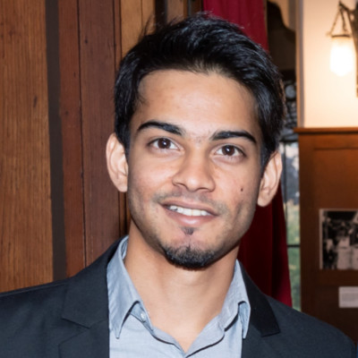
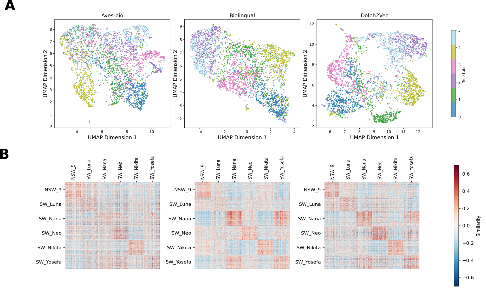
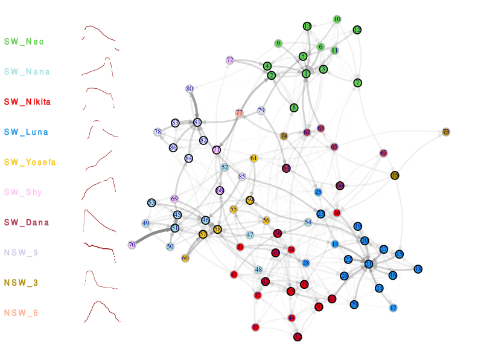

Seminar presentation at IBENS
Presented my work at the Neurosection Department Seminar, Institut de Biologie, ENS Paris.

PhD Candidate · Univ. Paris Cité / ENS Paris
I am a PhD candidate at the Institut de Biologie de l’École Normale Supérieure (IBENS) and Université Paris Cité. I hold a Bachelor’s degree in Mathematics from Université Pierre et Marie Curie and a Master’s degree in Applied Mathematics (Statistics) from Sorbonne Université.
My research lies at the intersection of bioacoustics, animal communication, and machine learning. Using large-scale longitudinal acoustic datasets and self-supervised learning approaches, I investigate how dolphin vocalizations encode information about identity, social relationships, and interaction dynamics.
More broadly, I am interested in developing computational tools to uncover the principles underlying animal communication systems and their evolution. More recently, I have been contributing to the development of multimodal datasets combining acoustic recordings with behavioral annotations extracted from video data.
Presented my work at the Neurosection Department Seminar, Institut de Biologie, ENS Paris.
Launched the citizen science project Dolphin Spotting on Zooniverse to collect behavioral annotations from dolphin video recordings.
Our paper Dolph2Vec was accepted at the AI for Non-Human Animal Communication workshop at NeurIPS 2025.
Presented our research on dolphin communication to the general public at the Fête de la Science in Paris.
Gave a guest lecture on dolphin acoustic communication at Ben-Gurion University, Eilat Campus.

C. Semenzin, F. Mustun, R. Dessì, A. Emanuelli, P. Orhan, Y. Lakretz, G. de Polavieja, G. Sumbre.
AI for Non-Human Animal Communication Workshop @ NeurIPS 2025.
Dolph2Vec is a self-supervised learning framework trained directly on dolphin vocalizations. The learned representations outperform general-purpose bioacoustic embeddings on dolphin-specific tasks and capture biologically meaningful acoustic structure.

F. Mustun, C. Semenzin (equal contribution), D. Rance, E. Marachlian, Z. Guillerm, A. Mancini, I. Bouaziz, E. Fleck, N. Shashar, G. de Polavieja, G. Sumbre.
This work shows that dolphin signature whistles exhibit structured within-individual variability rather than stereotyped production. By modeling transitions between whistle variants, we reveal non-random acoustic interaction patterns that form a modular social communication network.
PhD Student — Université Paris Cité / École Normale Supérieure - Paris, 2022-Present
Master’s Degree in Applied Mathematics (Specialization: Statistics) — Sorbonne Universités - Paris, 2019
Bachelor’s Degree in Mathematics — Université Pierre et Marie Curie - Paris, 2016
PhD Candidate, Institut de Biologie de l’École Normale Supérieure (IBENS), Université Paris Cité, Paris, France (2022–Present)
Research on dolphin communication, bioacoustics, and machine learning.
Statistical Engineer, INSERM / IBENS, Paris, France (2021–2022)
Developed computational methods for dolphin vocalization detection, classification, and sequence analysis.
Data Science Intern, Audentiel Conseil R&D, Boulogne-Billancourt, France (2019)
Worked on hyperparameter optimization and machine learning model selection.